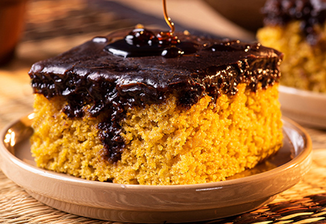

Bolo de Cenoura
Uma receita clássica e fácil de bolo de cenoura, muito popular no café da manhã e lanche da tarde. Macio, úmido e com cobertura de chocolate, é um doce irresistível preparado no liquidificador, perfeito para acompanhar um cafezinho.

Uma receita clássica e fácil de bolo de cenoura, muito popular no café da manhã e lanche da tarde. Macio, úmido e com cobertura de chocolate, é um doce irresistível preparado no liquidificador, perfeito para acompanhar um cafezinho.